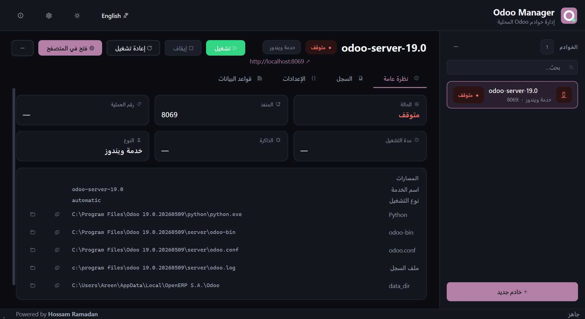
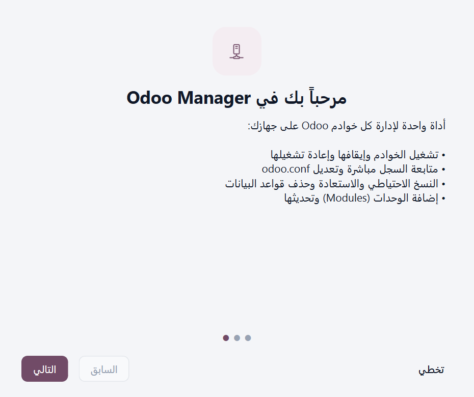
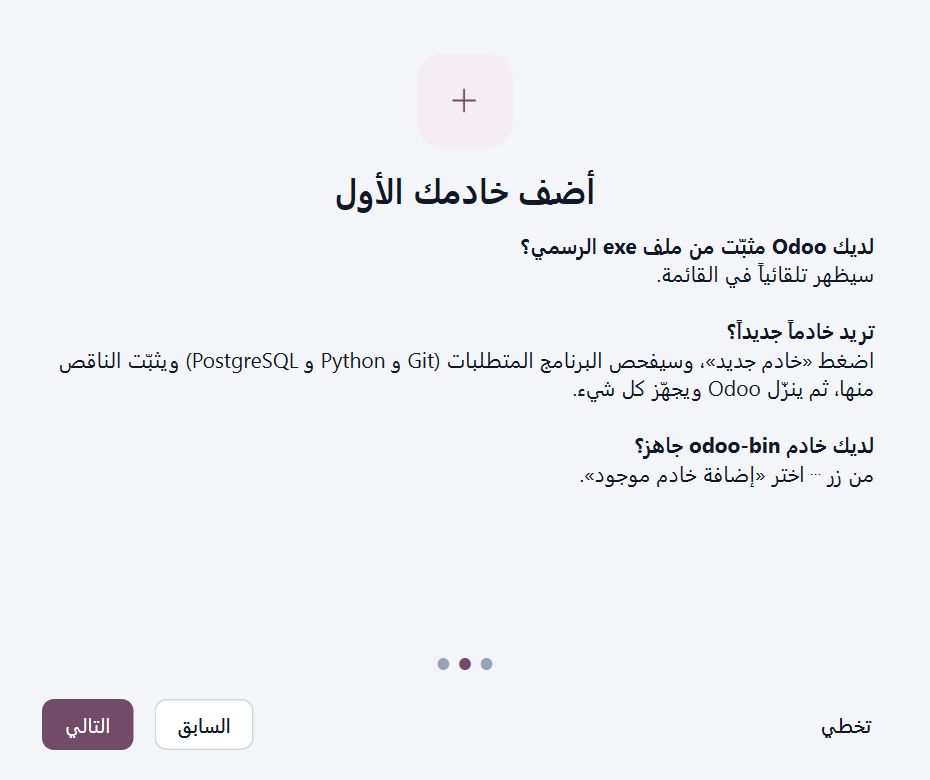
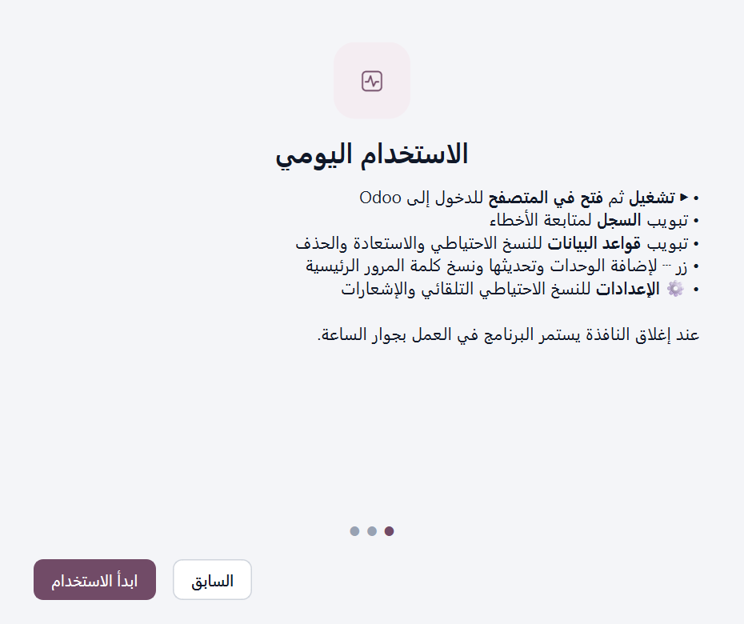
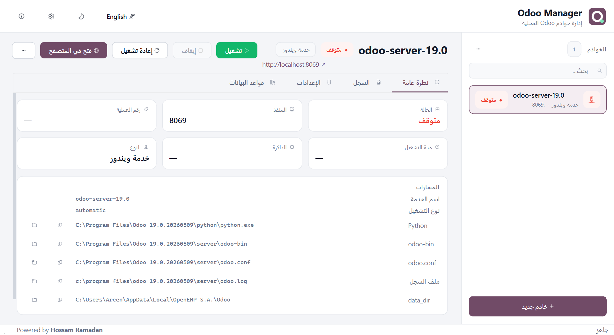
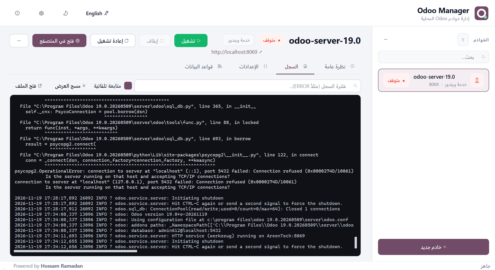
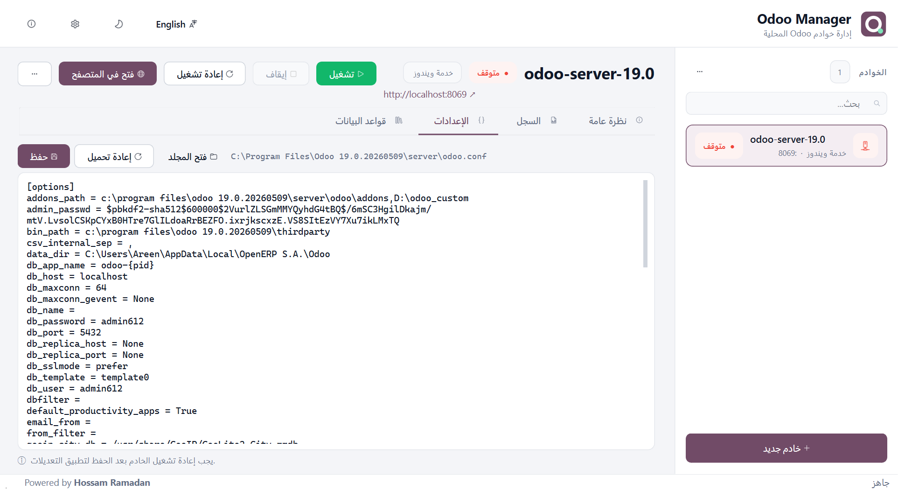
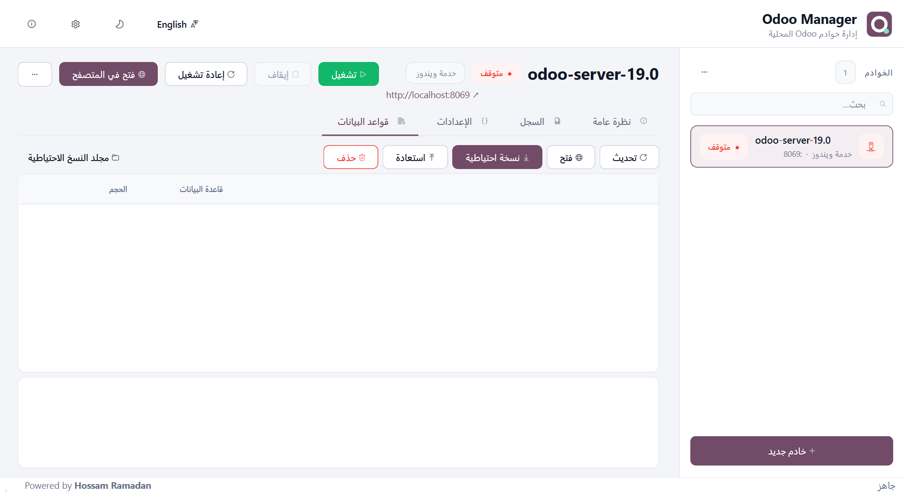
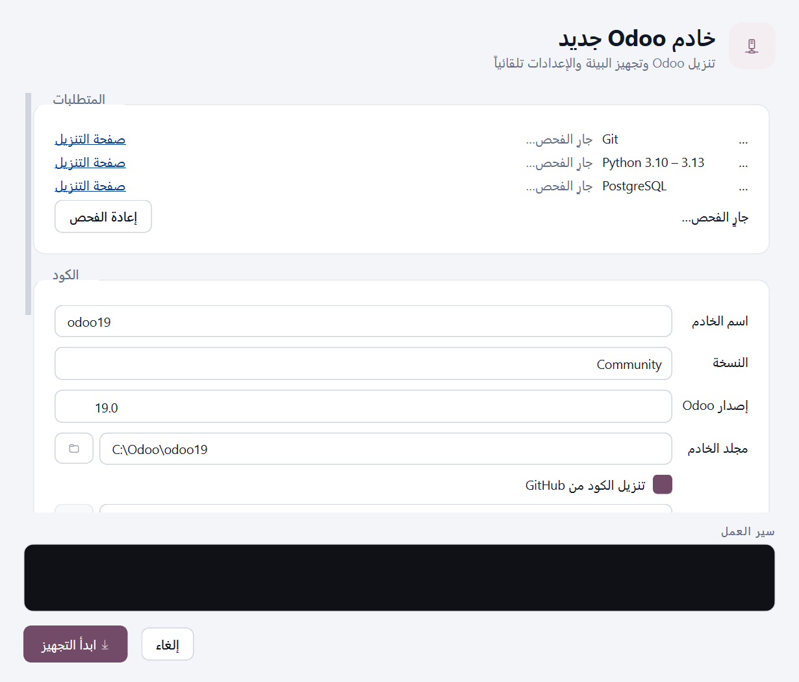
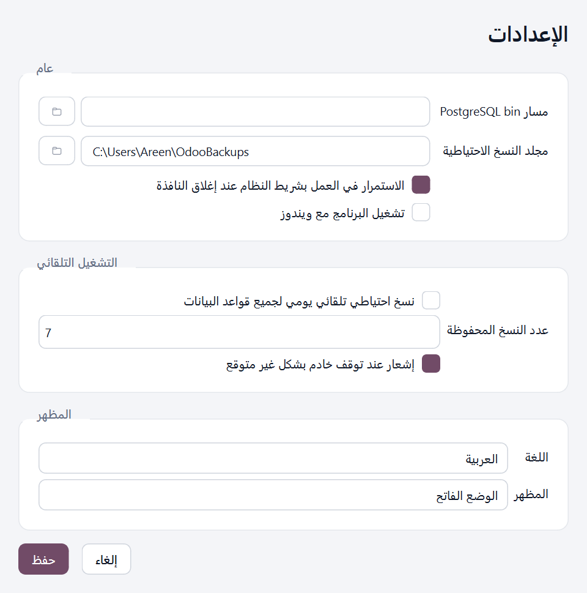

يتعامل المطوّرون ومنفّذو Odoo على ويندوز مع الخوادم من سطر الأوامر: تعديل odoo.conf يدوياً،
والبحث عن ملفات السجل، وأخذ النسخ الاحتياطية من صفحة قواعد البيانات، وتعارض المنافذ بين الإصدارات.
يجمع Odoo Manager كل ذلك في نافذة واحدة.
خدمات ويندوز وخوادم odoo-bin جنباً إلى جنب: تشغيل وإيقاف وإعادة تشغيل وفتح في المتصفح.
سجل مباشر ملوّن مع فلترة، ومحرر لملف odoo.conf يحفظ بصلاحيات المسؤول عند الحاجة.
نسخ احتياطي واستعادة وحذف بصيغة Odoo نفسها، مع نسخ احتياطي تلقائي يومي.
أضف وحدة من مجلد أو ملف zip، ثم ثبّتها أو حدّثها دون استخدام سطر الأوامر.
يفحص Git و Python و PostgreSQL، ويثبّت الناقص منها، ثم ينزّل Odoo ويجهّز البيئة.
عربي وإنجليزي، وضع فاتح وداكن، أيقونة بجوار الساعة، تشغيل مع ويندوز، وتنبيه عند التوقف.
ملف تثبيت واحد بحجم 54 ميجابايت تقريباً. البرنامج نفسه لا يحتاج إلى Python أو أي برامج إضافية ليعمل.
| المتطلب | التفاصيل |
|---|---|
| نظام التشغيل | ويندوز 10 أو ويندوز 11، 64 بت |
| ملف التثبيت | OdooManager-Setup-1.1.0.exe (≈ 54 ميجابايت) |
| المساحة | ≈ 60 ميجابايت للبرنامج، وكل خادم Odoo جديد يحتاج ≈ 2 جيجابايت |
| لإنشاء خوادم جديدة | Git و Python من 3.10 إلى 3.13 و PostgreSQL — يفحصها المعالج ويثبّتها لك |
OdooManager-Setup-1.1.0.exe.Program Files\OdooManager أو في مجلد المستخدم، ويمكن إزالته في أي وقت.إعدادات ويندوز ← التطبيقات ← Odoo Manager ← Uninstall. لا يمسّ إلغاء التثبيت خوادم Odoo ولا قواعد البيانات،
وتبقى قائمة الخوادم والإعدادات في %APPDATA%\OdooManager في حال أعدت التثبيت.
تظهر جولة ترحيبية من ثلاث صفحات عند أول تشغيل. وفي الوقت نفسه يكتشف البرنامج خدمات Odoo المثبّتة على الجهاز ويحدد مكان PostgreSQL تلقائياً.

1 · ماذا يفعل البرنامج

2 · أضف خادمك الأول

3 · الاستخدام اليومي
| لديك… | ماذا تفعل |
|---|---|
| Odoo مثبّت من ملف exe الرسمي | لا شيء — يظهر في القائمة تلقائياً. ثبّتّه بعد فتح البرنامج؟ استخدم ⋯ ← اكتشاف خدمات ويندوز. |
| لا شيء بعد | اضغط خادم جديد واتبع المعالج (الفصل 7). |
| خادم odoo-bin جاهز | ⋯ ← إضافة خادم موجود، ثم حدّد Python و odoo-bin و odoo.conf. |
الخوادم على الجانب، والخادم المختار في المنتصف. تتحدّث الحالة والمنفذ ورقم العملية والذاكرة ومدة التشغيل كل بضع ثوانٍ.

تبويب «نظرة عامة» لخدمة Odoo 19.
| الأداة | وظيفتها |
|---|---|
| تشغيل · إيقاف · إعادة تشغيل | التحكم في الخادم. خدمات ويندوز تطلب صلاحيات المسؤول (UAC). قبل تشغيل خادم odoo-bin يفحص البرنامج المنفذ ويذكر اسم البرنامج الذي يستخدمه. |
| فتح في المتصفح | يفتح http://localhost:<port>. النقر المزدوج على الخادم في القائمة يفعل الشيء نفسه. |
| قائمة ⋯ | تعديل، فتح المجلد، إضافة وحدة وتحديثها، فتح مجلد الوحدات المخصصة، نسخ كلمة المرور الرئيسية، حذف. |
| فحص المنافذ | يعرض منفذ كل خادم وينبّه إلى التعارض بينها أو مع برامج أخرى. |
| الشريط العلوي | تبديل اللغة، الوضع الفاتح والداكن، الإعدادات، عن البرنامج. |
تابع ما يفعله Odoo لحظة بلحظة، وغيّر إعداداته دون فتح محرر نصوص.

تبويب «السجل» — ملوّن حسب مستوى الرسالة، مع متابعة تلقائية ومربع فلترة (مثلاً ERROR).

تبويب «الإعدادات» — عدّل odoo.conf مباشرة. عند الحفظ يعرض البرنامج إعادة تشغيل الخادم لتطبيق التعديل.
Program Files محمية في ويندوز. يحفظها Odoo Manager عبر نافذة صلاحيات UAC، فلا تحتاج أبداً إلى «Run as administrator».يعمل النسخ الاحتياطي والاستعادة والحذف مباشرة على PostgreSQL دون الحاجة إلى كلمة المرور الرئيسية، وبصيغة zip الخاصة بـ Odoo، فتنتقل النسخ بحرية بين Odoo Manager وصفحة قواعد البيانات في Odoo.

تبويب «قواعد البيانات» — لكل قاعدة زر حذف خاص بها.
| العملية | كيف | ملاحظات |
|---|---|---|
| نسخة احتياطية | اختر القاعدة ← نسخة احتياطية | ملف zip يضم dump.sql و filestore، يُحفظ في مجلد النسخ الاحتياطية |
| استعادة | استعادة ← اختر الملف ← اسم جديد | يقبل zip و dump و backup و sql، ويرفض اسماً موجوداً |
| حذف | زر حذف بجانب القاعدة ← اكتب اسمها للتأكيد | نهائي، ويعمل حتى والخادم يعمل |
| فتح | نقر مزدوج على القاعدة | يفتحها في المتصفح |
| نسخ تلقائي يومي | الإعدادات ← التشغيل التلقائي | كل قاعدة على خادم يعمل، مرة يومياً، مع الاحتفاظ بآخر N نسخة (7 افتراضياً) |
أضف وحدة بنقرتين. ينسخها Odoo Manager إلى مجلد الوحدات المخصصة ويعيد تشغيل الخادم، ثم تثبّتها أنت من قائمة Apps في Odoo.
يستخدم البرنامج المجلد الموجود في addons_path الذي يحتوي اسمه على كلمة custom (أو آخر مجلد غير أساسي).
وإذا لم يوجد — كما في نسخة exe الرسمية — يعرض إنشاء مجلد ويضيفه إلى addons_path تلقائياً:
| نوع الخادم | المجلد المقترح |
|---|---|
| أُنشئ بالمعالج | <مجلد الخادم>\custom_addons (مُعدّ مسبقاً) |
| نسخة exe الرسمية (Program Files) | %USERPROFILE%\Odoo\custom_addons |
| أي نوع آخر | custom_addons بجوار odoo.conf، أو مجلد تختاره |
⋯ ← تحديث وحدة (Upgrade)، اختر قاعدة البيانات واكتب اسم الوحدة. يشغّل البرنامج التحديث في الخلفية، ويعرض أي أخطاء من السجل، ثم يعيد تشغيل الخادم.
version في __manifest__.py تبدأ بـ 19.0 لـ Odoo 19)، وأن تكون كل الوحدات المذكورة في depends متوفرة.من لا شيء إلى خادم Odoo يعمل — يفحص المعالج المتطلبات، وينزّل Odoo من GitHub، وينشئ بيئة افتراضية، ويكتب odoo.conf. استغرق إنشاء خادم Odoo 19 جديد نحو 3 دقائق في الاختبار.

لوحة المتطلبات: العناصر الناقصة يظهر بجانبها زر تثبيت.
| العنصر | زر التثبيت |
|---|---|
| Git | يثبّت Git بصمت |
| Python 3.10 – 3.13 | يثبّت Python 3.12 |
| PostgreSQL | يثبّت PostgreSQL 16، ويطلب كلمة مرور، وينشئ مستخدم odoo |
يتم التثبيت عبر winget من مايكروسوفت، ويظهر شريط تقدّم مع الوقت المنقضي ورسالة عند الانتهاء. إذا كان موقع EnterpriseDB غير متاح من شبكتك، يُنزَّل PostgreSQL من GitHub تلقائياً.
github.com/odoo/enterprise. أدخل رابط المستودع أو مجلداً موجوداً، ويضعه المعالج أولاً في addons_path. تُولَّد كلمة المرور الرئيسية وتُحفظ في odoo.conf (admin_passwd).اضبطها مرة واحدة واتركها تعمل. إغلاق النافذة يُبقي Odoo Manager بجوار الساعة، ومنها يمكن تشغيل أي خادم أو إيقافه أو فتحه بالنقر بزر الفأرة الأيمن.

نافذة الإعدادات.
| الإعداد | التأثير |
|---|---|
| مسار PostgreSQL bin | أدوات النسخ الاحتياطي والاستعادة (يُكتشف تلقائياً) |
| مجلد النسخ الاحتياطية | مكان حفظ النسخ |
| البقاء بجوار الساعة | إغلاق النافذة يخفيها فقط |
| التشغيل مع ويندوز | يبدأ مصغّراً عند تسجيل الدخول |
| نسخ احتياطي يومي | نسخ تلقائي لكل قواعد البيانات |
| عدد النسخ المحفوظة | تُحذف النسخ التلقائية الأقدم |
| تنبيه التوقف | إشعار عند توقف خادم بشكل غير متوقع |
| اللغة · المظهر | العربية / English · فاتح / داكن |
المشكلات التي يواجهها المستخدمون فعلاً، وحل كل منها.
| العَرَض | السبب والحل |
|---|---|
| «Access Denied» عند إنشاء قاعدة بيانات | كلمة المرور الرئيسية خاطئة. استخدم ⋯ ← نسخ كلمة المرور الرئيسية، أو عيّن admin_passwd جديدة من تبويب الإعدادات وأعد التشغيل. |
كلمة المرور الرئيسية تبدأ بـ $pbkdf2 | شفّرها Odoo ولا يمكن استرجاعها. عيّن كلمة جديدة من تبويب الإعدادات. |
| «no password supplied» على المنفذ 5432 | قيم db_user و db_password في odoo.conf لا تطابق مستخدماً في PostgreSQL. صحّحها وأعد التشغيل. |
| الخادم يعمل ثم يتوقف | افتح تبويب السجل. من الأسباب الشائعة حذف Python الذي بُني عليه الخادم مع إزالة نسخة Odoo قديمة — أعد إنشاء الخادم بالمعالج. |
| «المنفذ … مستخدم بالفعل» | خادم أو برنامج آخر يستخدم المنفذ. استخدم فحص المنافذ ثم غيّر http_port. |
| Internal Server Error مع أكثر من إصدار | كل إصدار من Odoo يرى قواعد بيانات الإصدارات الأخرى. أضف dbfilter في إعدادات كل خادم. |
| قاعدة مستعادة لا تفتح | هي من إصدار أقدم، أو وحداتها المخصصة غير موجودة — أضفها عبر إضافة وحدة. |
| لا يمكن الدخول إلى نسخة مستعادة | نسخ Odoo Online و Odoo.sh غالباً بلا كلمة مرور محلية. أعد تعيين كلمة مرور المستخدم في قاعدة البيانات. |
| PostgreSQL عليه ✕ في المعالج | PostgreSQL لا يعمل — قد تحذفه إزالة نسخة Odoo قديمة. اضغط تثبيت أو شغّل خدمته. |
أين تجد كل شيء.
Odoo علامة تجارية مملوكة لشركة Odoo S.A. وبرنامج Odoo Manager أداة مستقلة غير تابعة لها ولا معتمدة منها.